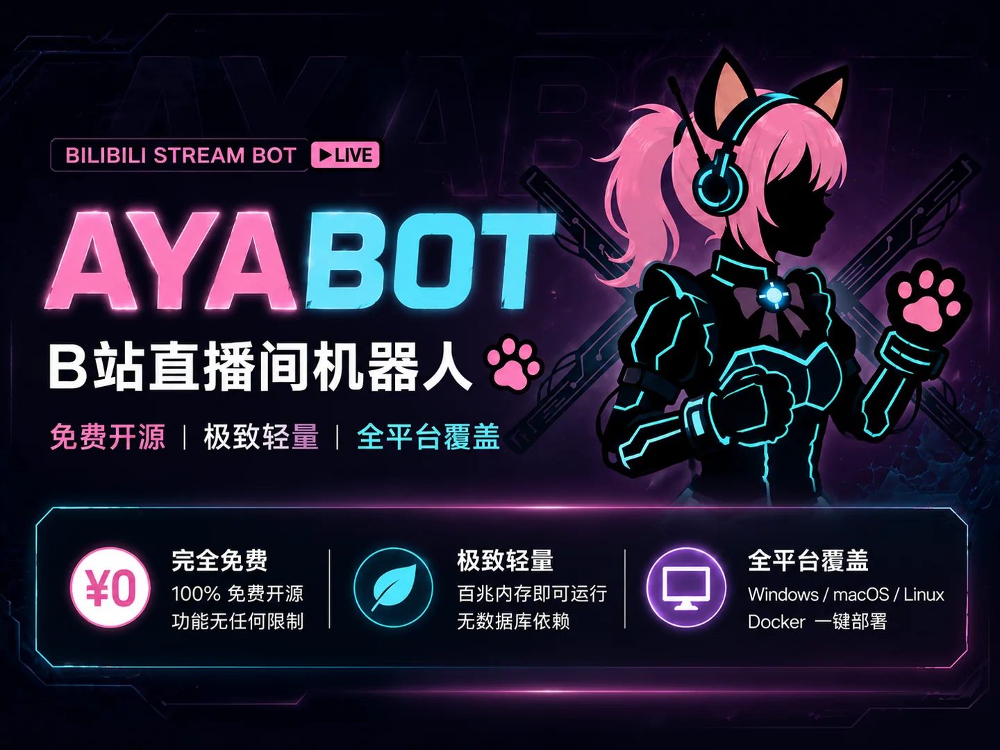

点任意处关闭

Ayabot 是一个跑在你自己电脑上的 B站直播间机器人。自动感谢礼物、统计盲盒与上舰、 按关键词或 AI 回复弹幕，数据全部存在本地 SQLite 里，随时导出。
礼物、盲盒、大航海（上舰）、弹幕，全部落库并可按日 / 按月统计。
兼容 B站新版 SEND_GIFT_V2 协议，盲盒按原价 / 实得分别记账，盈亏一眼看清。
自动识别舰长 / 提督 / 总督与开通月数，按实付电池计价，并记住每个舰长。
支持包含 / 精确匹配、免 # 指令、冷却与去重，避免刷屏被 B站风控。
接任意 OpenAI 兼容接口（含魔搭等免费额度），按唤醒词或关键词触发。
送礼排行榜、月度报表、精美导出图，还有完整的弹幕记录检索。
弹幕签到、每日抽签，可配冷却与文案，免 # 也能触发。
开播问候、定时播报、按间隔轮播文案，避免整场冷场。
心跳巡检、断线重连、登录失效引导重新扫码，不用盯着屏幕。
一个后台管多个直播间，支持多管理员，各自只看自己有权限的房间。
Windows 用户下载 exe 就好；服务器上也可以用 Docker 或直接跑源码。
托盘图标右键 →「打开管理后台」，默认地址 http://localhost:19810。进入「用户管理 → B站账号」用手机 B站 App 扫码。
「房间管理 → 新建房间」填主播 UID 和直播间号，选好功能开关后点「启动」。之后每次开机都会自动恢复。
页面一打开就开始测：用你自己的网络给每条线路各发一次 HEAD（不耗流量）， 每测完一条就地出结果，下载按钮自动指向你这边最快的线路。国内通常是 Gitee（走它自己的国内 CDN）。
最新 v1.2.x · 约 38 MB，内置 Web 管理后台与运行环境，不需要安装 Python。
# 拉取镜像（GitHub Container Registry）
docker pull ghcr.io/yujianke100/ayabot:latest
# 启动：把配置和房间数据挂到本机
docker run -d --name ayabot -p 19810:19810 \
-v ~/ayabot/data:/app/data \
-v ~/ayabot/rooms:/app/rooms \
-v ~/ayabot/accounts:/app/accounts \
--restart unless-stopped ghcr.io/yujianke100/ayabot:latest
国内拉不动 ghcr 时，可以用 docker.mirrors.ustc.edu.cn/ghcr.io/... 之类的镜像站，
或直接用 Docker Hub：yujianke100/ayabot:latest。
点任意处关闭
这些是用户反馈最多的问题，都已经在新版本里处理。
这是 Windows 对「从网上下载、没有数字签名」的程序的例行提示。点「运行」即可， 程序启动后会清除自己的下载标记，之后不再提示；也可以手动右键 exe → 属性 → 勾选「解除锁定」。
B站登录凭证有有效期。后台顶部会出现红色提示，点「重新登录」跳到扫码入口， 扫完会自动恢复运行，不需要重启软件。
3 个版本之前 B站把礼物事件换成了新的二进制协议（SEND_GIFT_V2），旧版本收不到任何礼物数据。 请更新到最新版；历史数据无法补回，需要从上舰 / 礼物后台人工核对。
最新版已修复：房间的期望状态记在 data/desired_states.json，
软件启动后会自动按上次状态拉起房间。如果你还在旧版本，需要手动升一次。
旧版本的更新检查是串行访问 GitHub 的，国内经常要等十几秒甚至失败。 新版本改为并发向国内镜像取版本号并测速下载线路，通常 1 秒内出结果，结果还会缓存。
页面会先在你本机给每条线路测速（只发 HEAD，不耗流量），然后按你实测最快的线路给下载按钮。
也可以点「重新测速」再试一次。如果整页都显示「不通」，
说明当前网络把 GitHub 及其加速站都限住了，可以用 Docker 镜像。
校验值在下载卡右侧，下完可以核对 sha256。
安装包只发布在 GitHub Release 和 Gitee 发行版两处（都是免费托管，不占用开发者自己的服务器带宽）， 其余列表里的是第三方 GitHub 加速站。加速站偶尔会挂，所以页面每次打开都实测一遍， 挂了的那条会自动排到最后并标「不通」；Gitee 与 GitHub 是官方托管，长期可用。
Windows：%LOCALAPPDATA%\Ayabot\；Docker：挂载出来的 data / rooms / accounts 目录。
统计数据库是标准 SQLite 文件，可以直接用工具打开或备份。